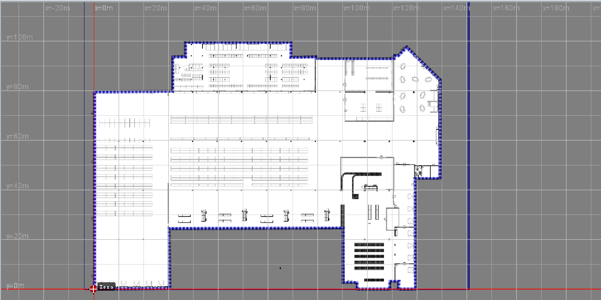
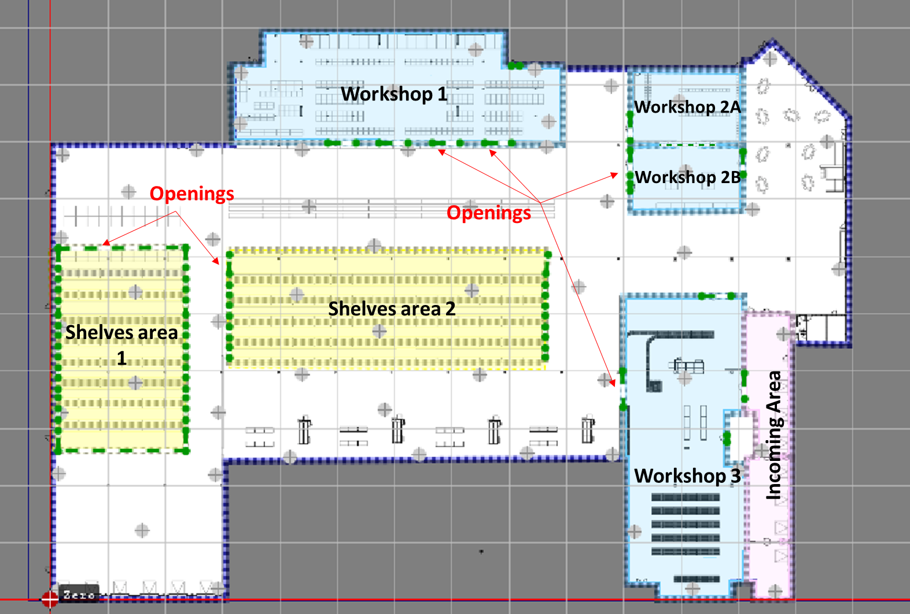
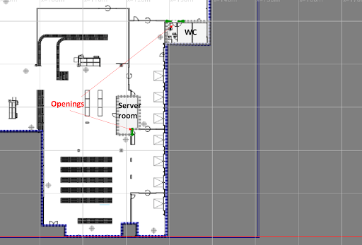
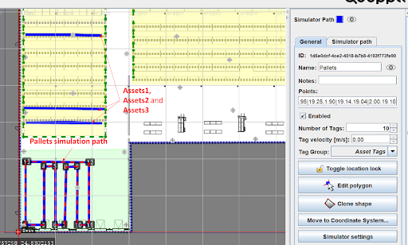
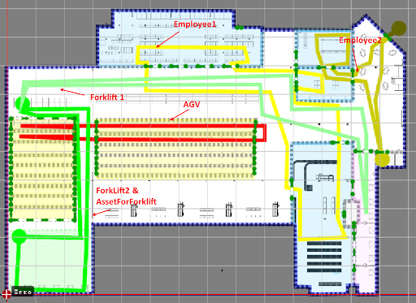

Static Simulation: Project Description
The Quuppa System Simulator (QSS) is a feature contained within the Quuppa Site Planner (QSP). It creates a virtual Quuppa system that sends a data stream of simulated positioning packets to the Quuppa Positioning Engine (QPE). This data is similar to that which is sent from the Locators to the QPE in a real-life deployment. Simulated data can be retrieved through Quuppa API, which allows seamless integration to the Quuppa system before setting up any hardware.
Static Simulation is a pre-defined project by Quuppa which covers the most common use cases. Static Simulation is running 24/7 at Quuppa providing a constant API stream for your integration.
This document will walk through the details of the static simulation project such as locators, subscription, zone and tag configuration.
Map and Tracking Area
The map which is used for the static simulation project is an industrial floor plan with shelves and workshop areas. The map file format is png. Origin point is set at the left bottom corner of the floor plan. The map is scaled with x = 154.59m and y = 119.78m

Tracking area is drawn following the floor map and the environment is set to be Semi-confined. Total area is 10575 m2.
Smart Zones
Smart ZonesSmart edge functionality is applied in areas characterised by walls or barriers, thereby preventing the passage of tags. Openings are utilised to serve as indicators for doors or exits through which tags are permitted to pass. Openings are visualised with a distinctive green and white line marking.
List of areas that have smart edges applied are:
-
Aisles and Shelves Areas: There are two main shelves areas in the project and they consist of 14 aisles in total.
-
Workshop Areas: There are 3 workshop areas as shown in the map below. Each Workshop has multiple Openings.
-
Incoming Area

Hidden Zones
Hidden zones are defined also using the smart edge functionality. However, the system does not display the locations of tags within the hidden zones. Hidden zones also have Openings indicating where tags can pass through.
Hidden zones is applied to following areas:
-
WC
-
ServerRoom

Tag Groups and Tag Configurations
The configuration of tags determines their transmit rate, which is influenced by the type of movement and velocity of the tracked objects. There are 3 main tag configurations used in the project:
-
ASSET_TAG: Used for tracking assets, e.g. pallets or products, transmitting 3Hz when moving and 0,1 Hz when stationary.
-
DEMO_TAG: Used for tracking different vehicles, e.g. AGV or forklift, transmitting 9 Hz when moving and 0.2 Hz when stationary.
-
Employee: Used for locating people, e.g. wearing wearable tags or card tags, transmitting 4 Hz when moving and 0.1 Hz when stationary.
In QSP, tags can be categorised into various tag groups based on the objects to which they are linked, and each tag group can be set with the appropriate tag configuration. Simulated tags in the project are classified into 5 different tag groups as listed below:
-
AGV: AGV tag group has configuration of DEMO_TAG
-
Pallets: AGV tag group has configuration of ASSET_TAG
-
Creates: AGV tag group has configuration of ASSET_TAG
-
Employees: AGV tag group has configuration of Employee
-
Forklifts: AGV tag group has configuration of DEMO_TAG
Stationary Assets Simulation
There are 4 simulation paths simulating a total of 19 stationary assets. All simulation paths velocity is set to be 0 m/s and belong to the Crates and Pallets tag group. Name of 4 simulation paths are:
-
Pallets: The path consists of 10 simulated tags which locate inside the PalletStorage area
-
Assets1, Assets2 and Assets3: Each path consists of 3 tags. All 9 simulated tags locate in the ShelvesArea1

Movement simulation
There are 6 simulation paths simulating movement. These are:
-
ForkLift1 and ForkLift2: Tags belong to the ForkLifts group. Velocity is set to be 3 m/s
-
1 AGV: Tags belong to the AGV group. Velocity is set to be 2 m/s
-
AssetForkLift: 1 asset picked up by ForkLif2. Tag group is set to Pallets. Velocity is set to be 3 m/s
-
Employee1 and Employee2: Tag is set to belong to the Employee group. Velocity is set to be 1 m/s. The Employee 2 is simulated to go into the Hidden area (WC) for 120 seconds and then leave the tracking area for a short work break of 300 seconds.
-

Data format
The Quuppa system provides the following standard output formats:
| Name | Notes |
| defaultInfo | Default format for Tag information |
| defaultLocation | Default format for Tag location |
| defaultLocationAndInfo | Default format for Tag location and information |
| ALL_ITEMS | Format containing all items. |
| MyDataFormat | This format contains location in xy and lat lon formats |